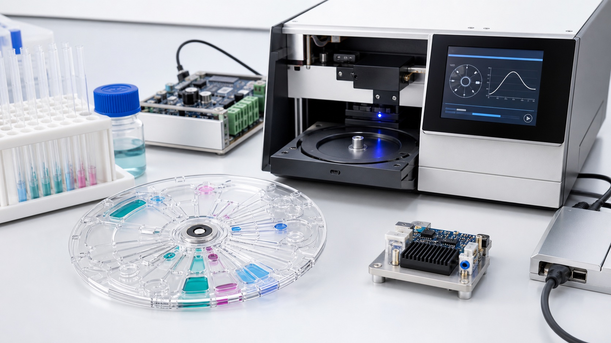

Centrifugal fluidics
Spin profiles, capillary effects, valving, metering, mixing, separation, and transfer sequencing.

Lab-on-CD platform focus
Long-term development vision · research stageLab-on-CD, also called lab-on-disc, uses controlled rotation to move and process small liquid volumes across a disc. MicroCD Labs is developing the engineering framework around that format: consumables, assays, motion control, detection, software, and evidence planning.
The 2030 roadmap is an aspirational planning framework. Timing and feasibility depend on technical results, funding, partners, intended use, quality systems, and any required regulatory pathway.

Platform definition
A useful platform must coordinate the disposable, instrument, assay, analysis, and operator experience. That systems view is the center of the MicroCD Labs development focus.
Enabling technologies
Each layer creates interfaces, test requirements, and failure modes that should be considered before claiming a point-of-care system.
Spin profiles, capillary effects, valving, metering, mixing, separation, and transfer sequencing.
Channel and chamber geometry, materials, bonding, reagents, sample interfaces, and manufacturability.
Motor selection, acceleration and deceleration profiles, speed feedback, balance, safety, and repeatability.
Sample preparation, reaction timing, reagent storage, controls, analytical targets, and interference questions.
Optics or sensing, calibration, signal extraction, kinetic features, decision logic, and uncertainty.
Operator steps, error prevention, run status, result presentation, cleaning, disposal, and service needs.
System architecture
The highest-value work often sits between disciplines: where assay timing meets fluidic sequencing, spin control meets disc geometry, or signal processing meets an operator decision.
Development vision to 2030
These are planning targets, not promised launch dates. Each stage should earn the right to proceed through measurable technical evidence.
Define target use cases, system requirements, disc architecture, motor-control methods, sensing options, and benchtop test strategy.
Evaluate sample handling, reagent steps, spin sequences, analytical signal, controls, failure modes, and repeatability.
Connect consumable, reader, software, and user workflow; improve reliability, manufacturability, and verification planning.
Assess whether the evidence, intended use, product risks, quality pathway, partners, and economics support formal product translation.
What “functional” must mean
Collaboration priorities
MicroCD Labs welcomes focused discussions with assay teams, centrifugal-fluidics researchers, optical and sensor developers, motor-control specialists, disc fabricators, quality and regulatory experts, and translational programs.